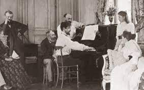

Claude Debussy was born on August 22, 1862, in Saint-Germain-en-Laye, France. He showed an early aptitude for music, starting piano lessons at the age of 7 and later studying at the Paris Conservatory. Despite facing financial difficulties, Debussy excelled in his musical studies and began composing at a young age. He was influenced by various musical styles, including the music of Richard Wagner and the Russian composers, as well as the visual arts and literature of his time.
Major Works
- Prelude to the Afternoon of a Faun
- Clair de Lune
- Suite Bergamasque
- Prelude Book I
- Prelude Book II
- Nocturnes
- Images
Impressionism
Debussy's contribution to music is often associated with the development of musical impressionism. Impressionism was a style of art that emerged in the late 19th century, primarily in painting, characterized by its emphasis on capturing the fleeting, sensory impressions of the natural world, rather than depicting detailed, realistic images. Debussy applied this concept to music by using unconventional scales, lush harmonies, and rich orchestrations to create a sense of atmosphere and mood in his compositions, often evoking the sounds and colors of nature. He experimented with innovative harmonies, tonalities, and forms, breaking away from traditional classical music conventions and creating a unique and unmistakable musical language. Debussy's music was known for its fluidity, sensuality, and evocative qualities, often creating a dream-like or otherworldly atmosphere. He was a pioneer in using new tonal colors and timbres in his compositions, pushing the boundaries of traditional harmonic and tonal structures. His innovative approach to music composition and his pioneering use of impressionistic techniques are widely regarded as a significant contribution to the development of musical impressionism Debussy's revolutionary approach to music composition and his unique musical style had a profound influence on subsequent generations of composers, and his works continue to be celebrated for their innovative use of harmony, form, and timbre.
Personal Life
Debussy's personal life was marked by several relationships and marriages, including his first marriage to Rosalie Texier, and his second marriage to Emma Bardac. He had a tumultuous romantic relationship with the singer Thérèse Roger, which inspired some of his compositions. Debussy also faced financial challenges and health issues throughout his life, including struggles with depression and chronic illness.
Legacy
Debussy's legacy as a composer is enduring and far-reaching. His music continues to be celebrated for its pioneering spirit, originality, and artistic vision. Debussy's innovative approach to composition, particularly his use of harmony, form, and color, has influenced countless composers and musicians over the years. His contributions to the development of modern music and his lasting impact on the world of classical music are widely recognized and revered.
First Arabesque, by Claude Debussy, performed by Stephen Malinowski
Debussy Arabesque No.1
Debussy's Arabesque No. 1 is a solo piano piece written in 1888. It is one of his most popular and frequently performed works, known for its delicate and lyrical melodies, lush harmonies, and intricate pianistic textures. The piece is characterized by its flowing, improvisatory style, evoking a sense of beauty, elegance, and dreamlike imagery.
The Death
Debussy died on March 25, 1918, at the age of 55, due to rectal cancer. He had been suffering from health issues for several years, and his health deteriorated rapidly in the final years of his life. Despite his declining health, Debussy continued to compose and create innovative music until his death, leaving behind a significant and enduring musicallegacy. Debussy's compositions continue to be widely performed and studied by musicians and scholars alike, and his music is considered groundbreaking and influential even today.